## We define the Hamitonian using the NetKet Paulis operators ##
nk.config.netket_spin_ordering_warning = False
N = 9
hi = nk.hilbert.Spin(s=1/2, N=N)
def get_H(J1,J2,h,N=N):
'''J1J2 Hamiltonian'''
# NN interactions
NN = [(0,1),(0,5),(1,4),(1,2),(2,3),(5,6),(5,4),(4,7),(4,3),(3,8),(6,7),(7,8)]
H = sum([J1*sigmaz(hi,i)@sigmaz(hi,j) for i,j in NN])
# NNN interactions
NNN = [(0,4),(5,1),(1,3),(4,2),(5,7),(6,4),(4,8),(7,3)]
H += sum([J2*sigmaz(hi,i)@sigmaz(hi,j) for i,j in NNN])
# External field
H += sum([h*sigmax(hi,i) for i in range(N)])
return HTraining VAEs on quantum data
In this first tutorial, we show how the representation learning tools implemented in qdisc can be used to learn a representation of the phase space directly from unlabelled quantum data.
We start by using qdisc.dataset to handle and preprocess the data efficiently, then walk through the qdisc.vae module, which provides tools to construct, customize, and train variational autoencoders (VAEs) for phase-space representation learning.
The main entry point is the qdisc.VAETrainer class, initialized by specifying:
- the data (an instance of
qdisc.Dataset), - a VAE model (an instance of
qdisc.VAEmodel), - a set of hyperparameters.
In the following we will:
- Generate raw quantum data.
- Train a VAE to learn a latent representation of the phase space.
- Inspect active latent variables and visualize the learned structure.
- Apply symbolic regression (SR) methods to extract compact analytical descriptors for the latent clusters (tutorial 2).
Generating quantum data
We consider a quantum experiment with a set of controllable experimental parameters \(\theta_{1,\ldots,k}\). For each parameter configuration, a measurement yields a string \(\mathbf{x}\), which can in principle take any form. Here we focus on experiments where individual subsystems — spins, atoms, or qubits — can be measured locally, either via discrete projective measurements in a fixed basis, measurements along random directions, or continuous local density measurements. In this case, \(\mathbf{x} = \{ x_i \}_{i=1}^{N}\), where \(N\) is the number of subsystems.
As a compact toy example, we use the J₁–J₂ model on a \(3\times 3\) square lattice with open boundary conditions, fixing \(J_1 = 1\). The Hamiltonian is
\[ H_{J_1 J_2} = \sum_{\langle i,j\rangle} \sigma_i^z \sigma_j^z + J_2 \sum_{\langle\langle i,j\rangle\rangle} \sigma_i^z \sigma_j^z + h \sum_i \sigma_i^x, \]
where \(\langle\cdot\rangle\) and \(\langle\langle\cdot\rangle\rangle\) denote nearest-neighbour (NN) and next-nearest-neighbour (NNN) pairs, respectively.
The experimental tuning parameters are: - \(\theta_1 = J_2 \in [0,\,1.5]\), and - \(\theta_2 = h \in [0.1,\,2]\).
In this tutorial, the data consist of measurement snapshots in the \(\sigma^z\) basis, generated as follows:
- Exact diagonalization of the Hamiltonian over a grid of tuning parameter values \((\theta_1, \theta_2)\).
- Computation of measurement probabilities from the resulting ground-state wavefunction.
- Sampling of snapshots from these probabilities in the \(\sigma^z\) basis.
The Hamiltonian construction and exact diagonalization are performed using NetKet, a powerful library for computational quantum physics.
#size of the system
N = 9
#define the various observables we want to compute
NN = [(0,1),(0,5),(1,4),(1,2),(2,3),(5,6),(5,4),(4,7),(4,3),(3,8),(6,7),(7,8)]
NNN = [(0,4),(5,1),(1,3),(4,2),(5,7),(6,4),(4,8),(7,3)]
corr_op = sum([sigmaz(hi,i)@sigmaz(hi,j) for i,j in NN])
corr2_op = sum([sigmaz(hi,i)@sigmaz(hi,j) for i,j in NNN])
#H parameters
J1 = 1.
all_J2 = jnp.linspace(0, 1.5, 21)
all_h = jnp.linspace(0, 2., 21)[1:]
#containers for the observables
energies = jnp.zeros((len(all_J2),len(all_h)))
wave_fcts = jnp.zeros((len(all_J2), len(all_h), 2**N, 1))
corr_gs = jnp.zeros((len(all_J2),len(all_h)))
corr2_gs = jnp.zeros((len(all_J2),len(all_h)))
#exact diagonalization for every set of parameter of H
for i, J2 in enumerate(all_J2):
for j, h in enumerate(all_h):
#print('J2: {}, h: {}'.format(J2,h))
H = get_H(J1,J2,h,N=N)
E_gs, ket_gs = nk.exact.lanczos_ed(H, compute_eigenvectors=True)
corr = (ket_gs.T.conj()@corr_op.to_linear_operator()@ket_gs).real[0,0]
corr2 = (ket_gs.T.conj()@corr2_op.to_linear_operator()@ket_gs).real[0,0]
energies = energies.at[i,j].set(E_gs[0])
wave_fcts = wave_fcts.at[i,j].set(ket_gs)
corr_gs = corr_gs.at[i,j].set(corr)
corr2_gs = corr2_gs.at[i,j].set(corr2)
data_exact = {'energies': energies, 'wave_fcts': wave_fcts, 'corr_gs': corr_gs, 'corr2_gs': corr2_gs}Across the explored parameter space, the system exhibits three distinct phases.
For small \(J_2\) and weak transverse field \(h\), the nearest-neighbour interactions dominate. This regime shows a Néel-ordered phase, characterized by antialigned nearest-neighbour spins.
For large \(J_2\) and small \(h\), the next-nearest-neighbour couplings become dominant. The system then enters a striped phase, in which nearest-neighbour spins align while next-nearest-neighbour spins are antialigned.
Finally, for sufficiently large transverse field \(h\), the spins polarize along the \(x\) direction, forming a polarized phase.
We can visualize the phase space by looking at the next-nearest-neighbor correlator:
plt.rcParams['font.size'] = 16
plt.figure(figsize=(5,5),dpi=100)
plt.imshow(jnp.rot90(data_exact['corr2_gs']))
plt.ylabel(r'$h$')
plt.xlabel(r'$J_2$')
plt.colorbar(shrink=0.675)
plt.title(r'corr')
y_tick_positions = [0,10,19]
y_tick_labels = ['2', '1', '0.1']
plt.yticks(y_tick_positions, y_tick_labels)
x_tick_positions = [0, 10, 20]
x_tick_labels = ['0', '0.75', '1.5']
plt.xticks(x_tick_positions, x_tick_labels)
plt.show()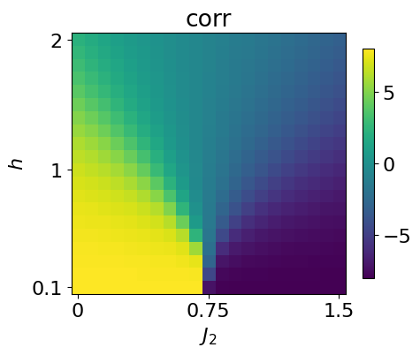
We now generate the data using the exact wavefunction. To do so, we simply sample spin values from the probabilities given by the exact wavefunction using the function sample_spin_configurations from qdisc.dataset
## generate the data ##
from qdisc.dataset.core import sample_spin_configurations
num_sample_per_params = 1000
data = jnp.zeros([jnp.size(all_J2), jnp.size(all_h), num_sample_per_params, N])
key = jax.random.PRNGKey(8324)
wave_fcts = data_exact['wave_fcts']
for i, J2 in enumerate(all_J2):
for j, h in enumerate(all_h):
#print('J2: {}, h: {}'.format(J2,h))
key, subkey = jax.random.split(key)
samples = sample_spin_configurations(wave_fcts[i,j], num_samples=num_sample_per_params, N=N, key=subkey)
data = data.at[i,j].set(samples)To check that the data produced is correct, we can look at the magnetization across the parameter space by just computing the average mean
plt.rcParams['font.size'] = 16
plt.figure(figsize=(5,5),dpi=100)
plt.imshow(jnp.rot90(jnp.mean(jnp.abs(jnp.mean(data*2-1, axis=-1)), axis=-1)))
plt.ylabel(r'$h$')
plt.xlabel(r'$J_2$')
plt.colorbar(shrink=0.675)
plt.title(r'magnetization')
y_tick_positions = [0,10,19]
y_tick_labels = ['2', '1', '0.1']
plt.yticks(y_tick_positions, y_tick_labels)
x_tick_positions = [0, 10, 20]
x_tick_labels = ['0', '0.75', '1.5']
plt.xticks(x_tick_positions, x_tick_labels)
plt.show()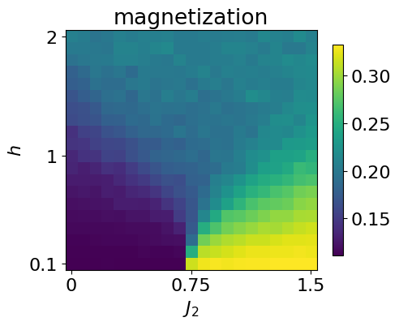
We next cast the generated data into a qdisc.Dataset object, which provides a unified interface for handling quantum data within the qdisc pipeline.
To construct the dataset, the following information must be specified: - the values of the tuning parameters, - the type of quantum data, - the dimension of the local Hilbert space, - the values of the local states (for discrete data).
from qdisc.dataset.core import Dataset
dataset = Dataset(data=data, thetas=[all_J2, all_h], data_type='discrete', local_dimension=2, local_states=jnp.array([0,1]))Learning a latent representation of the phase space
With the dataset in hand, we now learn a representation of the phase space using a variational autoencoder trained to reconstruct the conditional probabilities of spin configurations.
The VAE consists of two neural networks: - an encoder, which takes a spin configuration as input and outputs a mean \(\mu_i\) and variance \(\sigma_i\) defining a latent distribution \(\mathcal{N}(\mu_i, \sigma_i)\), from which a latent variable \(z_i\) is sampled; - a decoder, which reconstructs the conditional probabilities of the spin configuration given the latent variables \(\mathbf{z}\).
Both networks are implemented using the Flax library. Several architectures are available in qdisc.nn; given the simplicity of the present system, we use: - a convolutional neural network for the encoder, and - a dense masked network for the decoder.
A key strength of VAEs is their ability to adaptively infer the effective dimensionality of the latent space: by choosing a latent dimension larger than physically expected, the model learns to use only the dimensions it needs. Here, we set latent_dim = 5.
from qdisc.nn.core import EncoderCNN2D, ARNNDense
encoder = EncoderCNN2D(latent_dim=5, conv_features = 4*N, dense_features = 4*N, num_conv_layers=3)
decoder = ARNNDense(num_layers=4, features=4*N)With the encoder and decoder defined above, we can assemble the VAE model using qdisc.vae:
from qdisc.vae.core import VAEmodel
myvae = VAEmodel(encoder=encoder, decoder=decoder)The central object of this section is the VAETrainer wrapper from qdisc.vae, which handles model training and computes the learned representation. It is instantiated from a VAE model and a dataset:
from qdisc.vae.core import VAETrainer
myvaetrainer = VAETrainer(model=myvae, dataset=dataset)To train the model, we use the .train() method, specifying: - a random key (for reproducibility), - the number of training epochs, - the loss hyperparameters \(\alpha\), \(\beta\), and \(\gamma\).
The training objective is defined as
\[ \mathcal{L} = \frac{1}{M}\sum_{m=1}^{M} \mathbb{E}_q[\log p(x^{(m)} \mid z)] - \beta \, \mathrm{KL}[q(z \mid x^{(m)}) \| p(z)] \]
where \(M\) is the number of training samples \(x^{(m)}\).
The first term promotes accurate probabilistic reconstruction of the input data. The second is a regularization term that penalizes the Kullback–Leibler (KL) divergence between the latent posterior \(q(z_i) \sim \mathcal{N}(\mu_i, \sigma_i)\) and the standard normal prior \(\mathcal{N}(0,1)\), keeping the latent representation close to an uninformed prior.
The interplay between these two terms naturally yields a sparse latent structure: only the latent neurons required for faithful reconstruction deviate from the prior (active neurons), while the rest collapse to it (passive neurons). The hyperparameter \(\beta\) controls the balance between the two contributions.
The hyperparameter \(\gamma\) weights the statistical correlations between latent neurons (total correlation regularization). This can improve interpretability and, in some cases, simplify hyperparameter tuning — see the original TC-VAE paper for details.
For hybrid data, the reconstruction loss comprises two distinct terms, whose relative weight is controlled by \(\alpha\). See the corresponding paper or the FKM example notebook for details.
Important: # The following training takes a few seconds on a GPU, but around an hour on a CPU. If you don’t want to spend this time, you can just load the trained data by running the next cell.
key = jax.random.PRNGKey(9812)
num_epochs = 30
myvaetrainer.train(num_epochs=num_epochs, batch_size=5000, beta=.5, gamma=5, key=key, printing_rate=4)Start training...
epoch=0 step=0 loss=-164.0816877940576 recon=6.24122033277154
logvar=[ 0.02889643 0.06553731 0.08578867 0.07469489 -0.11742282]
epoch=4 step=0 loss=-166.45211124671502 recon=2.5760088226371716
logvar=[-1.36892477e-03 -4.82999374e-02 -6.22983538e-02 -5.30253240e-02
-5.17253551e+00]
epoch=8 step=0 loss=-166.69147796032797 recon=2.1487739147339293
logvar=[ 0.00951258 -0.01400834 -0.02464279 -0.00858941 -5.84861374]
epoch=12 step=0 loss=-166.7729565138266 recon=1.9637902448406568
logvar=[-0.03862359 -0.04633447 -0.01720772 -0.0306454 -6.30670534]
epoch=16 step=0 loss=-166.87305732748734 recon=1.8128534112447012
logvar=[-0.0251713 -0.03875362 -0.02637963 -0.02864144 -6.4948804 ]
epoch=20 step=0 loss=-166.8853334271902 recon=1.773370016137969
logvar=[-0.01703035 -0.03162701 -0.02305127 -0.0382037 -6.62230354]
epoch=24 step=0 loss=-166.97256104566398 recon=1.6597759778974905
logvar=[-0.02856087 -0.04890603 -0.03495724 -0.03407848 -6.66632657]
epoch=28 step=0 loss=-166.87848415521344 recon=1.7192362466692372
logvar=[-2.64610119e-02 -4.01741369e-02 -1.93288443e-02 3.23893816e-03
-6.80669410e+00]
Training finished.As indicated by simple observables such as the next-nearest-neighbour correlator, the phase space of this system can be fully characterized by a single parameter. We therefore expect only one active latent neuron, with the remaining ones collapsing to the prior.
To encourage this behavior, we use relatively large weights for the KL divergence and total correlation (TC) terms. The TC regularization helps sparsify the latent representation, since an active latent variable is typically weakly correlated with noise. When only one neuron is active, the TC term does not alter the learned representation but still suppresses spurious correlations among passive neurons.
To inspect the training progress, we can examine the reconstruction loss and the log-variances of the latent neurons using the .plot_training() method:
#load the trained model
with open('J1J2_data_cpVAE2_QDisc.pkl', 'rb') as f:
all_data = pickle.load(f)
myvaetrainer.init_state(jax.random.PRNGKey(0), dataset.data[0,0])
myvaetrainer.state = myvaetrainer.state.replace(params=all_data['params'])
myvaetrainer.history_recon = all_data['history_recon']
myvaetrainer.history_logvar = all_data['history_logvar']myvaetrainer.plot_training(num_epochs = num_epochs)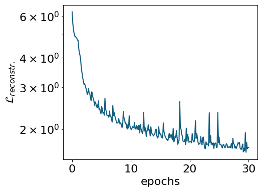
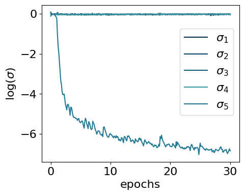
The model encodes information in a single active latent variable, with the log-variance of all others collapsing to zero.
To inspect the learned representation, use compute_repr2d() to compute it and plot_repr2d() to visualize it — or combine both steps with .compute_and_plot_repr2d(), as shown below:
#latvar = myvaetrainer.compute_repr2d(return_latvar = True) #this also update the attribute latvar of the object
#myvaetrainer.plot_repr2d()
## or one can do both by just calling
# now the latent variables are ordered with respect to the values of their logvar: from low (most active) to high (most passive)
myvaetrainer.compute_and_plot_repr2d()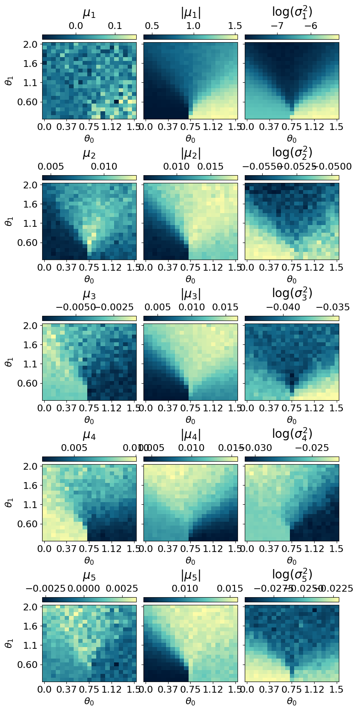
During training, the VAE reduces its reconstruction loss. However, a low reconstruction loss alone does not guarantee that the model faithfully approximates the true ground state. It is therefore essential to explicitly assess the quality of the reconstructed physical observables.
A common approach is to generate samples from the decoder and compute statistical estimates of selected observables. In our example, this is done by sampling spin configurations from the learned conditional distribution.
Below, we use the .reconstruct_sample() method to generate spin configurations at each point in parameter space and then compute the average magnetization across the full parameter range.
reconstruct_sample = jnp.zeros_like(dataset.data)
key = jax.random.PRNGKey(2687)
for i in range(dataset.data.shape[0]):
for j in range(dataset.data.shape[1]):
subkey, key = jax.random.split(key)
reconstruct_sample = reconstruct_sample.at[i,j].set(myvaetrainer.reconstruct_sample(dataset.data[i,j],subkey))plt.rcParams['font.size'] = 16
plt.figure(figsize=(5,5),dpi=100)
plt.imshow(jnp.rot90(jnp.mean(jnp.abs(jnp.mean(reconstruct_sample*2-1,axis=(-1))),axis=-1)))
plt.ylabel(r'$h$')
plt.xlabel(r'$J_2$')
plt.colorbar(shrink=0.675)
plt.title(r'magn')
y_tick_positions = [0,10,19]
y_tick_labels = ['2', '1', '0.1']
plt.yticks(y_tick_positions, y_tick_labels)
x_tick_positions = [0, 10, 20]
x_tick_labels = ['0', '0.75', '1.5']
plt.xticks(x_tick_positions, x_tick_labels)
plt.show()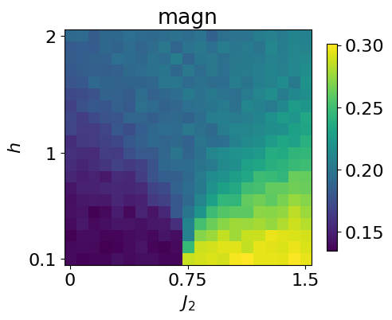
This can be compared with the magnetization computed directly from the dataset.
plt.rcParams['font.size'] = 16
plt.figure(figsize=(5,5),dpi=100)
plt.imshow(jnp.rot90(jnp.mean(jnp.abs(jnp.mean(dataset.data*2-1,axis=(-1))),axis=-1)))
plt.ylabel(r'$h$')
plt.xlabel(r'$J_2$')
plt.colorbar(shrink=0.675)
plt.title(r'magn')
y_tick_positions = [0,10,19]
y_tick_labels = ['2', '1', '0.1']
plt.yticks(y_tick_positions, y_tick_labels)
x_tick_positions = [0, 10, 20]
x_tick_labels = ['0', '0.75', '1.5']
plt.xticks(x_tick_positions, x_tick_labels)
plt.show()
#quick comparaison without setting the same cbar
#given the patterns, should be ~1/9 for neel and ~1/3 for striped
#the apparent magnetization in the polarized phase is due to the fact that we make the average of the absolute magn. (all zero due to Z2 degene otherwise)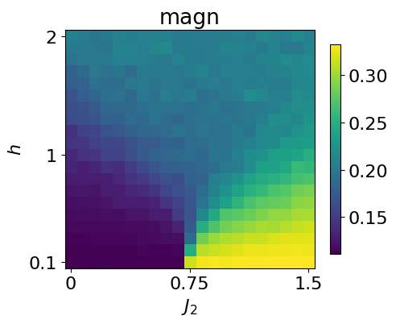
The .get_data() method returns a dictionary containing the training history, the optimized VAE parameters, the learned representation, and more.
all_data = myvaetrainer.get_data()
all_data.keys()dict_keys(['params', 'history_loss', 'history_recon', 'history_logvar', 'latvar'])The data can then be saved using pickle:
## also add the data and the exact corr ##
all_data['corr_exact'] = data_exact['corr_gs']
all_data['corr2_exact'] = data_exact['corr2_gs']
all_data['data'] = dataset.datawith open('J1J2_data_cpVAE2_QDisc.pkl', 'wb') as f:
pickle.dump(all_data, f)And loaded back with:
with open('J1J2_data_cpVAE2_QDisc.pkl', 'rb') as f:
all_data = pickle.load(f)Clustering the latent representation
In this toy example, the different phases are clearly visible in the learned latent representation. For more complex phase diagrams or higher-dimensional representations, however, identifying phase boundaries by eye becomes challenging. To address this, qdisc provides clustering tools that operate directly on the latent space to automatically identify distinct phases.
The clustering algorithm currently implemented is a Gaussian Mixture Model (GMM), applied to a feature vector \(X\) constructed as follows: - the first component is the average value of the active latent variable across the parameter space; - the (normalized) tuning parameters \(\theta_i\) are appended to this vector.
Including the tuning parameters helps the GMM find clusters with smoother, better-defined boundaries. Their relative contribution is controlled by a weighting parameter \(\alpha\).
To use qdisc.clustering.GaussianMixture, one must specify: - the number of clusters (phases), - the maximum number of iterations.
An optional \(k\)-means initialization can be enabled via init_params="kmeans".
from qdisc.clustering.core import GaussianMixture
## get the latent representation
#latvar = myvaetrainer.latvar
latvar = all_data['latvar']
data = all_data['data']
mu0abs = latvar['mu0_abs']
theta_pair = (1,0)#latvar['theta_pair']
#get the experimental parameters thetas to weight on the parameter space distance by alpha and have a smooter clustering
alpha = 0.001
theta1 = dataset.thetas[theta_pair[0]]
theta2 = dataset.thetas[theta_pair[1]]
theta1_norm = (theta1 - jnp.min(theta1)) / (jnp.max(theta1) - jnp.min(theta1))
theta2_norm = (theta2 - jnp.min(theta2)) / (jnp.max(theta2) - jnp.min(theta2))
#vector to perform the GMM one
X = jnp.array([mu0abs.reshape(-1), alpha*jnp.tile(theta1_norm[:,None], reps=(jnp.size(theta2_norm),)).reshape(-1), alpha*jnp.tile(theta2_norm[None, :], reps=(jnp.size(theta1_norm),)).reshape(-1)]).transpose()
for n_components in [2,3,4,5]:
print('GMM with n_components: {}'.format(n_components))
clusterer = GaussianMixture(
n_components=n_components,
max_iter=500,
init_params="kmeans"
)
clusterer.fit(X, key=jax.random.PRNGKey(4362))
classes = clusterer.predict(X).reshape((jnp.size(theta1),jnp.size(theta2)))
final_classes = jnp.zeros((jnp.size(theta1),jnp.size(theta2)))
for i in range(jnp.size(theta1)):
for j in range(jnp.size(theta2)):
v, c = jnp.unique_counts(classes[i,j])
final_classes = final_classes.at[i,j].set(v[jnp.argmax(c)])
fig_shape = (len(theta1)/5, len(theta2)/5)
plt.rcParams['font.size'] = 16
plt.figure(figsize=fig_shape,dpi=100)
plt.imshow(jnp.flipud(final_classes), aspect='auto')
cbar = plt.colorbar(orientation="horizontal", pad=0.03, location="top")
cbar.set_label(r'classification: #classes={}'.format(n_components))
plt.ylabel(r'$\theta_{}$'.format(theta_pair[0]))
plt.xlabel(r'$\theta_{}$'.format(theta_pair[1]))
plt.yticks([i for i in range(0,len(theta1),len(theta1)//4)], [str(theta1[len(theta1)-i])[:3] for i in range(0,len(theta1),len(theta1)//4)])
plt.xticks([i for i in range(0,len(theta2)+1,len(theta2)//4)], [str(theta2[i])[:3] for i in range(1,len(theta2)+1,len(theta2)//4)])
plt.show()GMM with n_components: 2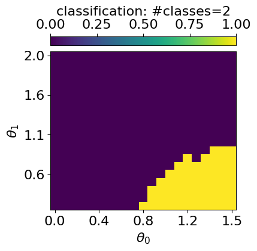
GMM with n_components: 3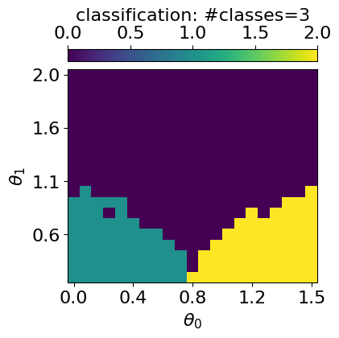
GMM with n_components: 4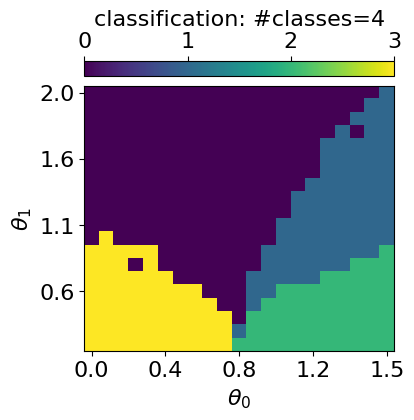
GMM with n_components: 5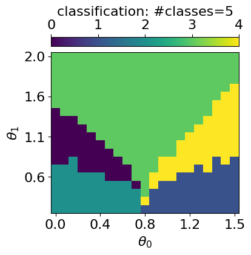
To determine the optimal number of clusters, qdisc.clustering provides the select_n_components() function, used as shown below:
from qdisc.clustering.core import select_n_components
## Can also compute some metrics to evaluate the optimal number of class
ks = range(2, 7) # ranges of n_components tested
results = select_n_components(X, ks, n_init=5, max_iter=500, random_seed=2546)
# collect bic/aic/loglikelihood
bics = jnp.array([results[k]['metrics']['bic'] for k in ks])
aics = jnp.array([results[k]['metrics']['aic'] for k in ks])
avg_lls = jnp.array([results[k]['metrics']['avg_log_likelihood'] for k in ks])
# K that minimizes BIC/AIC
best_k_bic = ks[jnp.argmin(bics)]
best_k_aic = ks[jnp.argmin(aics)]
print("Best K (BIC):", best_k_bic, "Best K (AIC):", best_k_aic)
#3 is indeed the best (neel, pola, striped), the fourth one is a phase boundary (can also be interesting)Trying K=2
Trying K=3
Trying K=4
Trying K=5
Trying K=6
Best K (BIC): 3 Best K (AIC): 5## plot of each metrics
from matplotlib import pyplot as plt
for i, k in enumerate(ks):
print('results GMM n_components: {}'.format(k))
print('BIC: {}'.format(bics[i]))
print('AIC: {}'.format(aics[i]))
print('avg_log_likelihood: {}'.format(avg_lls[i]))
plt.rcParams['font.size'] = 16
plt.figure(figsize=(5,4),dpi=100)
plt.plot(ks, bics, 'o-', label='BIC')
plt.plot(ks, aics, 'o-', label='AIC')
#plt.plot(ks, avg_lls, 'o-', label='avg_log_likelihood')
plt.xlabel('n_components')
plt.ylabel('score')
plt.legend()
plt.rcParams['font.size'] = 16
plt.figure(figsize=(5,4),dpi=100)
plt.plot(ks, avg_lls, 'o-', label='avg_log_likelihood')
plt.xlabel('n_components')
plt.ylabel('avg_log_likelihood')
plt.show()
#3 also leads to a big increase og log_likelihoodresults GMM n_components: 2
BIC: -9700.291536668057
AIC: -9777.056376182329
avg_log_likelihood: 11.684590924026583
results GMM n_components: 3
BIC: -9810.477975436434
AIC: -9927.645362063478
avg_log_likelihood: 11.88767305007557
results GMM n_components: 4
BIC: -9763.699312877627
AIC: -9921.269246617445
avg_log_likelihood: 11.903891960258864
results GMM n_components: 5
BIC: -9738.231419973254
AIC: -9936.203900825847
avg_log_likelihood: 11.945480834316486
results GMM n_components: 6
BIC: -9683.22510978266
AIC: -9921.600137748026
avg_log_likelihood: 11.951904925890508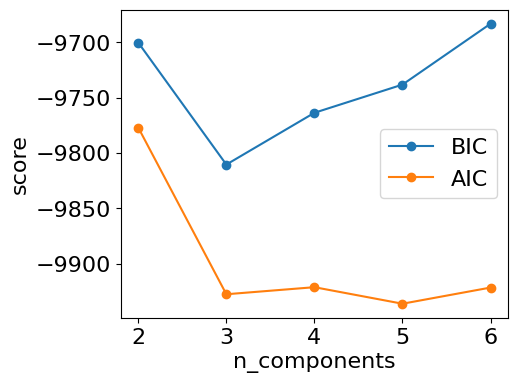
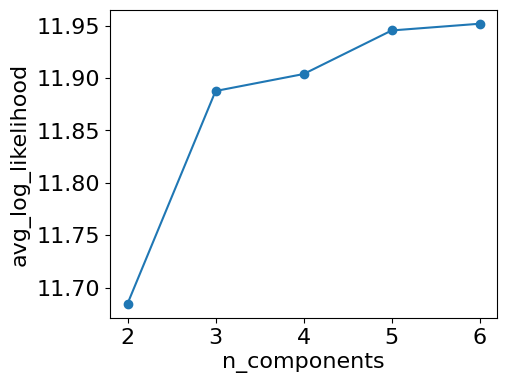
Symbolic regression
For the symbolic regression (SR) tools implemented in qdisc, see the second tutorial notebook.